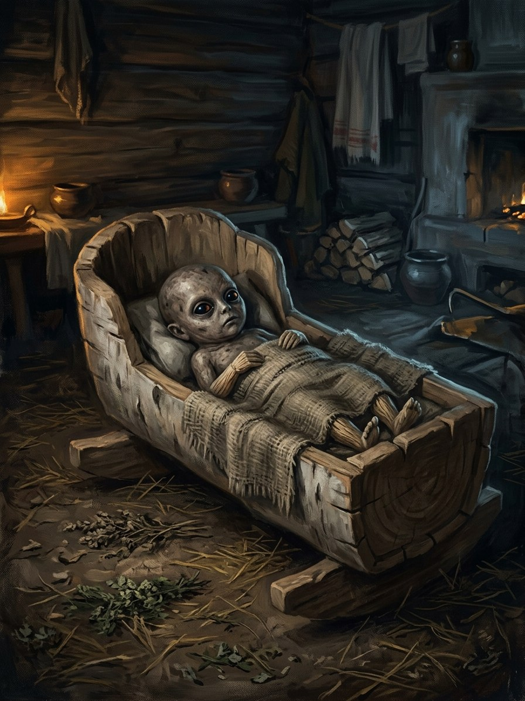

Laumiukai (changelings)¶
Folk source [Historical record]¶
In Lithuanian tradition laumės (and other water-beings) steal unattended infants and leave their own: an ugly, big-headed, ever-hungry, never-growing child. Remedies resemble those across Europe: mistreating the changeling so the laumė returns the stolen child, or provoking it to reveal its great age. Infants were protected by never being left alone and by iron, a knife or a broom near the cradle.
Laumiukai (changelings)

Laumiukai (changelings) · creature¶
Type |
creature |
Status |
The saga’s invention |
Note |
Bestiary §7. Danger II → IV. |
In the saga (where the folk are half-wrong)¶
The swap is real, and it is a bargain enforced without consent. Laumės take children whose mothers broke courtesy, or who were born on a laumės’ night, to raise as weavers. What they leave is sometimes their own sickly child, but often a dying human child from another house that the laumė is trying to save. The cruel folk remedies work because they offend custom so badly that the laumė returns the child, which means torturing a child who might be someone else’s.
Signs & habitat¶
A baby who changes overnight: eyes too old, appetite too great, never crying at the right times; wet hen-tracks by the cradle.
Before / after the Unbinding¶
Before: swaps happen, and the child is often returned at seven, trained and strange. After: laumės leave nothing; the cradle is empty or holds a linen-wrapped log.
Banes, wards, bargains, and their cost¶
Never leave an unnamed infant alone; a knife or broom under the cradle (a mother cannot work the fields). Carve Laimos medis on the cradle and feed it a thread of the mother’s hair. Whisper the child’s secret name into its ear at birth (the elements, and anyone who overhears, now know it). The cruel remedy: you may be beating somebody else’s baby.
Danger level¶
II hazard → IV deadly.
Story hooks¶
Books II–III: a grown changeling who weaves for Vytautas’s court and sees threads no one else can. Book V: an Orthodox priest in Švitrigaila’s lands baptising a changeling, the beginning of a horror.
Relations
Servant of: Laumės (weavers by the water)
Origin [Historical record] children left in the cradle by laumės: big-headed, ever-hungry, never growing · [The saga's invention] a bargain enforced without consent
Tier Dvasia · the laumės' servants
Danger II hazard → IV deadly
Habitat The cradles of unnamed infants
Wants Children whose mothers broke courtesy, or who were born on a laumės' night, to raise as weavers
Takes The infant. After 1387 nothing is left: an empty cradle, or a linen-wrapped log
Signs A baby who changes overnight: eyes too old, appetite too great, never crying at the right times; wet hen-tracks by the cradle
Banes A knife or broom under the cradle; Laimos medis fed with the mother's hair; the secret name whispered at birth
Half-wrong truth. The swap is real. What the laumė leaves is sometimes her own sickly child, but often a dying human child from another house that she is trying to save. The cruel folk remedies work because they offend custom so badly that she returns the stolen child, which means torturing a child who may be someone else's.
Before 1387. The child is often returned at seven, trained and strange.
The swap. Takes the infant, leaves its own in the cradle.
Never leaving the infant alone. A mother who cannot leave the cradle cannot work the fields.
Laimos medis. Carved on the cradle and fed with a thread of the mother's hair. It fades if unfed, and a tired mother forgets.
The secret name. A named child is far harder to take, but the name is now known to the elements and to anyone who overhears.
The cruel remedy. You may be beating somebody else's baby.
Connections¶
graph LR
laumes["Laumės (weavers by the water)"]
laumiukai["Laumiukai (changelings)"]
laumiukai -->|Servant of| laumes
style laumiukai stroke-width:3px